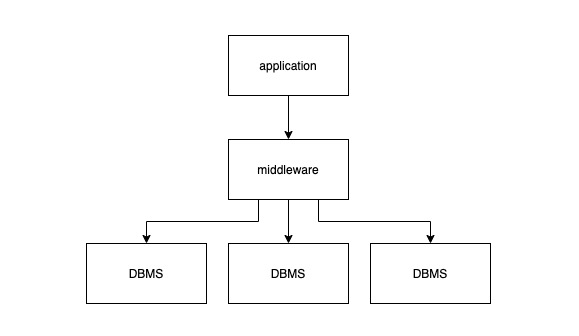
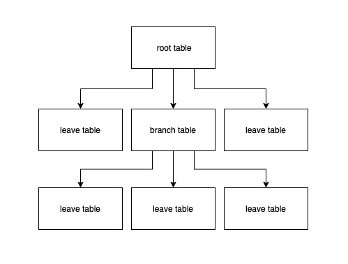

What's Really New with NewSQL (2016)
在进入文章之前，应该先介绍两位重量级作者：Andrew Pavlo 和 Matthew Aslett。Andrew 在 CMU 的计算机科学学院任教，主攻方向包括内存数据库、自动驾驶系统架构、事务处理系统和海量数据分析，他是 CMU Database Group 的核心成员，在 CMU 开设的两门课程 Database Systems (15-445/645) 和 Advanced Database System (15-721) 全是干货；Matthew 是 451 research: Data, AI & Analytics channel 的 VP，他在 2011 年的一篇 论文 中第一次用 NewSQL 指代提供类似 NoSQL 高吞吐、高可用支持，同时仍然保持 ACID 特性的新一代数据库系统。
相比于已经问世 40 多年的关系型数据库 (relational DBMS) ，我们不禁会问："新兴的 NewSQL 究竟是一种市场营销还是确有其创新之处？" 如果 NewSQL 确实能够在多方面达到更高的性能，那么下一个问题就是："它的性能是来自于硬件的升级还是其系统设计有着科学上的创新？"
要回答这两个问题，我们先讨论数据库系统的历史以及 NewSQL 的诞生，再讨论 NewSQL 在数据库系统各个重要设计方面的细节。
注：本文基本上会是原文的一个完整翻译，如果你愿意，大可直接点击文末链接翻看原文 ：）
A Brief History of DBMSS
世界上第一个数据库系统，IBM IMS (Information Management System) 诞生于 1966 年，它被用于存储土星五号 (Saturn V) 和阿波罗 (Apollo) 空间探索项目所需的零件和供应商信息。IMS 的主要贡献在于展示了 "应用程序逻辑与数据操作逻辑应该分离" 的理念，应用程序开发者只需要关注数据的逻辑变化，而无需关心其具体实现。在 IMS 之后，出现了第一批关系型数据库，其主要代表就是 IBM 的 System R 系统以及加州大学的 INGRES，即 PostgreSQL 的前身。INGRES 迅速在其它大学的信息系统中流行起来，并于 70 年代末商业化。大约在相同的时期，Oracle 采用类似 System R 的设计，开发并发布其 DBMS 的第一个版本。在 80 年代初期又涌现了一批公司，它们也推出自己的商业化数据库产品，如 Sybase 和 Informix。在 System R 之后，IBM 在 1983 年发布了新的关系型数据库 DB2，后者复用了 System R 的部分代码，但二者至今未开源。
从 80 年代末到 90 年代初，面向对象的语言开始流行，这也催生了一批面向对象的 DBMS 诞生，以期磨平数据库模型与语言之间的隔阂。然而由于没有类似 SQL 一样的标准接口，这些面向对象的 DBMS 始终没有在市场上被广泛接受，不过它们的一些设计理念逐渐被融合进关系型数据库，许多流行的关系型数据库都增加了对 Object、XML 和 JSON 数据的支持。除此之外，面向文档 (document-oriented) 的 NoSQL 数据库也或多或少是面向对象的 DBMS 的延伸。
90 年代的一个大事件就是两个开源关系型数据库的发布，MySQL 和 PostgreSQL。MySQL 于 1995 年在瑞士诞生，主要基于 ISAM 的 mSQL 系统开发；PostgreSQL 于 1994 年启动，由两名伯克利的学生 fork Postgres 的源码二次开发，增加 SQL 查询语言的支持。
从 2000 年后，互联网应用如雨后春笋般出现，这些应用对各种资源的要求都远超传统的软件服务。互联网应用需要支持大量用户的并发访问，且对可用性要求极高，最好永远在线。在实践中，数据库开始成为互联网应用的瓶颈。许多厂商尝试纵向扩容，提高单机硬件性能，但这种方式换来的提升十分有限，表现出明显的边际收益递减。而且纵向扩容通常很不平滑，将数据从一台机器移动到另一台机器需要长时间下线服务，这对于互联网用户来说无法接受。为了解决这个问题，一些公司定制化开发中间件 (middleware)，将数据分片到多个普通单机 DBMS 上：

对上层应用抽象出一个逻辑数据库，而背后则将数据分散到不同的物理数据库上。当应用发起请求时，这层中间件需要转发或重写这些请求，分发给背后数据库集群的一个或多个节点，待这些节点执行完请求返回数据后，前者再将数据聚合返回给上层应用。从这个思路出发构建的两个比较著名的系统分别是 eBay 的 Oracle-based cluster 和 Google 的 MySQL-based cluster。后来 Facebook 也采用类似的策略构建内部的 MySQL cluster 并沿用至今。尽管利用中间件对数据分片的策略，可以处理简单的点读、点写操作，但如果要在一个事务中更新多条数据，或者多表 join 就变得十分困难。正因为如此，这些早期的中间件都不支持这类操作，eBay 要求这些中间件的用户必须在应用层逻辑中完成 join 逻辑。显然这违背了 "应用程序逻辑与数据操作逻辑应该分离" 的理念，将数据操作逻辑重新暴露给应用开发者。
最终基于中间件的分片方案被逐渐抛弃，各个公司将精力转向自研分布式数据库。除中间件方案暴露出的问题之外，传统数据库解决方案还暴露出两个问题：
- 传统数据库注重一致性和正确性，在可用性和性能上有所牺牲。但这种 trade-off 与注重并发和可用性的互联网应用的需求背道而驰。
- 传统关系型数据库的许多功能在互联网应用中并不适用，而支持这些功能却会消耗额外的资源，如果能够使用更轻量的数据库也许能提升整体性能。除此之外，关系模型也许不是表达应用数据的最佳方式，使用完整的 SQL 来完成简单查询似乎是 "杀鸡用牛刀"。
这些问题正是 2005-2010 年间 NoSQL 运动的起源。NoSQL 的拥趸普遍认为阻碍传统数据库横向扩容、提高可用性的原因在于 ACID 保证和关系模型，因此 NoSQL 运动的核心就是放弃事务强一致性以及关系模型，拥抱最终一致性和其它数据模型 (如 key/value，graphs 和 documents)。两个最著名的 NoSQL 数据库就是 Google 的 BigTable 和 Amazon 的 Dynamo，由于二者都未开源，其它组织就开始推出类似的开源替代项目，包括 Facebook 的 Cassandra (基于 BigTable 和 Dynamo)、PowerSet 的 Hbase (基于 BigTable)。有一些创业公司也加入到这场 NoSQL 运动中，它们不一定是受 BigTable 和 Dynamo 的启发，但都响应了 NoSQL 的哲学，其中最出名的就是 MongoDB。
在 21 世纪 00 年代末，市面上已经有许多供用户选择的分布式数据库产品。使用 NoSQL 的优势在于应用开发者可以更关注应用逻辑本身，而非数据库的扩展性问题；但与此同时许多应用，如金融系统、订单处理系统，由于无法放弃事务的一致性要求被拒之门外。一些组织，如 Google，已经发现他们的许多工程师将过多的精力放在处理数据一致性上，这既暴露了数据库的抽象、又提高了代码的复杂度，这时候要么选择回到传统 DBMS 时代，用更高的机器配置纵向扩容，要么选择回到中间件时代，开发支持分布式事务的中间件。这两种方案成本都很高，于是 NewSQL 运动开始酝酿。
The Rise of NewSQL
本文认为 NewSQL 是对一类现代关系型数据库的统称，这类数据库对于一般的 OLTP 读写请求提供可横向扩展的性能，同时支持事务的 ACID 保证。换句话说，这些系统既拥有 NoSQL 数据库的扩展性，又保持传统数据库的事务特性。NewSQL 重新将 "应用程序逻辑与数据操作逻辑应该分离" 的理念带回到现代数据库的世界，这也验证了历史的发展总是呈现出螺旋上升的形式。
在 21 世纪 00 年代中，出现了许多数据仓库系统 (如 Vertica，Greeplum 和 Aster Data)，这些以处理 OLAP 请求为设计目标的系统并不在本文定义的 NewSQL 范围内。OLAP 数据库更关注针对海量数据的大型、复杂、只读的查询，查询时间可能持续秒级、分钟级甚至更长。NewSQL 数据库设计针对的读写事务有以下特点：
- 耗时短
- 使用索引查询，涉及少量数据 (非全表扫描或者大型分布式 Join)
- 重复度高，通常使用相同的查询语句和不同的查询参数
也有一些学者认为 NewSQL 系统是特指实现上使用 lock-free 并发控制技术和 share-nothing 架构的数据库。所有我们认为是 NewSQL 的数据库系统确实都有这样的特点。
Categorization
既然已经定义 NewSQL，我们就可以分析一下如今整个 NewSQL 数据库的图景。现今市面上的 NewSQL 数据库大抵可以分为 3 类：
- 完全使用新的架构重新设计开发的 NewSQL 数据库
- 在中间件层实现 NewSQL 特性的数据库
- 云计算平台提供的数据库即服务产品，通常也是基于新的架构
在撰写本文之前，两位作者都将利用 "替换单机数据库存储引擎" 的方案划分到 NewSQL 中。这种方案的典型代表就是一些替换 MySQL InnoDB 的方案，如 TokuDB，ScaleDB，Akiban，deepSQL，MyRocks 的等等。使用新存储引擎的好处在于对于应用来说这样的替换毫无感知。但现在，两位作者收回了之前的观点，他们认为通过替换存储引擎和使用插件的方式扩展单机数据库系统并不是 NewSQL 系统的典型代表，不属于本文的谈论范围。通常，通过替换 MySQL 存储引擎来提升数据库 OLTP 场景下性能的方案最终都难逃失败。
接下来我们将分别讨论这 3 类 NewSQL 数据库。
New Architectures
从无到有搭建的 NewSQL 系统最令人感兴趣，因为项目设计有最大的自由度而无需考虑陈旧系统在设计、架构方面的负担。所有属于这类的数据库系统都是基于 shared-nothing 的分布式架构，同时包含以下模块：
- 多节点并发控制 (multi-node concurrency control)
- 多副本数据复制 (replication)
- 流量控制 (flow control)
- 分布式查询处理 (distributed query processing)
使用新的数据库系统的另一优势在于各个组件都可以针对多节点环境作出优化，如查询优化器、节点之间的通信协议等等。一个具体的例子就是，大多数的 NewSQL 数据库都可以在节点之间直接传递同一查询 (intra-query) 内部的数据，而无需像一些基于中间件的方案需要通过中心节点路由数据。
除了 Google 的 Spanner 之外，属于这个类别的数据库通常都会自己管理存储模块，这意味着这些 DBMS 也需要负责将数据分布到不同的节点上，而不是采用开箱即用的分布式文件系统 (如 HDFS)，或 storage fabric (如 Apache Ignite)。这是很重要的设计决定，自己管理意味着 "send the query to the data"，而依赖三方存储则意味着 "bring the data to the query"，前者传递的是查询命令，后者传递的是数据本身，显然前者对于网络带宽资源消耗更加友好。自行管理存储层也使得数据库系统能够使用更精致、高效的复制策略，而不局限于 block-based 的复制策略。总得来说，自行搭建存储层可以获得更高的性能提升。
使用新的架构并非没有缺点，其最大的缺点就是它的技术过新导致用户担心这些技术背后还有许多坑尚未被填平，这也进一步意味着使用新系统的用户群体过小，不利于产品本身的打磨。除此之外，一些已经被广泛接受的运维、监控、报警生态也需要从头做起。为了避免此类问题，一些数据库系统，如 Clustrix、MemSQL、TiDB，选择兼容 MySQL 的通信协议；又如 CockroachDB 选择兼容 PostgreSQL 通信协议。
例子：Clustrix、CockroachDB、Google Spanner、H-Store、HyPer、MemSQL、NuoDB、SAP HANA、VoltDB、TiDB 等等。
Transparent Sharding Middleware
市面上也有一些产品提供与当年 eBay、Google、Facebook 以及其它公司类似的中间件解决方案，并支持 ACID。在中间件之下的每个数据库节点通常：
- 运行相同的单机版数据库系统
- 只包含整体数据的一部分
- 不用于单独接收读写请求
这些中心化的中间件主要负责路由请求，协调事务执行、分布数据、复制数据以及划分数据到多节点。通常在每个数据库节点中还有一层薄薄的通信模块，负责与中间件通信、代替中间件执行请求并返回数据。所有这些模块合起来共同向外界提供一个逻辑单体数据库。
使用中间件的好处在于其替换现存数据库系统十分简单，应用开发者无感知。在中间件方案中最常见的单机数据库就是 MySQL，这意味着为了兼容 MySQL，中间件层需要支持 MySQL 通信协议。尽管 Oracle 提供了 MySQL Proxy 和 Fabric 工具帮助大家兼容，但为了避免 GPL license 的潜在问题，大部分公司都选择自行实现协议层的兼容。
基于中间件方案的缺点在于其依赖了传统数据库。传统数据库普遍采用以磁盘为中心 (disk-oriented) 的设计架构，它们诞生于 20 世纪 70 年代，因此这类方案无法使用一些 NewSQL 系统使用的以内存为中心 (memory-oriented) 的设计架构，从而也就无法有效利用其更高效的存储管理模块和并发控制模块。之前的一些研究已经表明，以磁盘为中心的架构设计在某种程度上限制了传统数据库更高效地利用更多的 CPU 核以及更大的内存空间。同时，对于复杂的查询，中间件方案有可能会引入冗余的查询计划和优化 (中间件一次、数据库节点一次)，尽管这种做法也可以看成是查询的局部优化。
例子：AgilData Scalable Cluster、MariaDB MaxScale、ScaleArc 以及 ScaleBase。
Database-as-a-Service
许多云计算供应商提供了 NewSQL 的数据库即服务产品。使用这类服务，开发团队就没有必要在私有的硬件或者从云服务商处购买的虚拟机上维护数据库系统，而是由云服务商接管数据库的配置、调优、复制、备份等等。云服务商的用户只需要通过给定的 URL 访问数据库系统，或者利用控制面板和 API 来管理系统。
DBaaS 的消费者根据其资源利用情况来支付。由于不同的数据库查询使用的计算资源可能大相庭径，因此 DBaaS 供应商通常不会像采用块存储服务一样根据查询次数的计费方式，而是让消费者确定其最大的资源使用限制 (如存储空间、计算资源和内存使用等) 来提供服务保证。比较出名的属于 DBaaS 的 NewSQL 系统是 Amazon 的 Aurora，它既兼容 MySQL 的通信协议又兼容 PostgreSQL 的通信协议，其背后使用基于 log-structured 的存储管理模块来提高 I/O 的并行效率。
也有一些公司依托于大型云服务商提供的云平台服务构建 DBaaS 解决方案，如 ClearDB，它们可以被部署在各大云服务商的基础设施之上。这种方案的好处是可以在同一区域将数据库分布在不同的提供商上，来减少故障风险。
例子：Amazon Aurora、ClearDB
The State of the Art
本节我们讨论 NewSQL 数据库系统各模块的设计思路，来看看它们在实践和理论上是否有创新之处。
Main Memory Storage
传统 DBMS 使用的是 disk-oriented 存储设计，数据主要存储在块存储设备，如 SSD 或 HDD。由于在块存储设备上读写速度慢，这些 DBMS 会将读入的数据块缓存在内存中，也将待写出的数据缓存在内存中，通过批量写出提高效率。由于内存与磁盘相比，容量更小，价格更昂贵，这种设计极大地降低计算机的成本。几十年后的现在，内存的价格和容量都得到了改善，除了一些极大的 OLTP 数据库，绝大多数数据库都可以被完全装入内存中，这使得DBMS 可以快速地从内存中读出数据，甚至不再需要像缓存管理 (buffer pool manager)、重量级并发控制机制这些模块。从 disk-oriented 转向 memory-oriented 赋予 DBMS 性能优化新的可能性。
许多 NewSQL 数据库都采用基于内存的存储架构，不论是学术界的实验性数据库，如 H-Store，HyPer；还是业界的商用数据库，如 MemSQL、SAP HANA 和 VoltDB。这些系统的性能在 OLTP 负载下的性能表现都要优于基于外存的存储架构。
实际上，将整个数据库装进内存的观点并不新鲜，Wisconsin-Madison 大学在 20 世纪 80 年代就已经在内存数据库领域打下了基础，覆盖了索引、查询处理、数据恢复等各个方面。在同一年代，第一个分布式内存数据库，PRISMA/DB 完成开发。到了 90 年代，第一批商用内存数据库问世，包括 Altibase、Oracle TimesTen 以及 AT&T DataBlitz。
memory-oriented 的 NewSQL 数据库中的创新点在于尝试将数据库中比较不活跃的数据清出内存，从而减少内存使用，这使得这些 NewSQL 数据库能够存储比它内存空间更大的数据而无需回到 disk-oriented 的存储架构。广义地说，这类做法都需要建立一个内部跟踪机制来发现内存中不活跃的记录，在必要时将其清出到外存。以 H-Store 为例，它的 anti-caching 模块会将不活跃的记录清出，并在其原来的位置放置一个 tombstone 记录，当某个事务想要访问这条记录时，就将事务中止，然后起一个独立的线程去异步加载记录放回内存中。当然直接使用操作系统的虚拟内存的 paging 机制也能达到相同的目的，如 VoltDB。为了避免在利用索引查找时产生误判 (false negative)，所有的二级索引都需要保留被清出记录的 key，如果应用所用的数据表有较多的二级索引，那么即便记录被清出，依然会造成内存浪费。Microsoft 的 Siberia 项目，在解决这个问题时利用了 bloom filter 来判断目标记录是否存在，以此来减少内存消耗。尽管 Siberia 不是 NewSQL 数据库，但这种做法值得参考。
MemSQL，另一个 NewSQL 数据库，没有跟踪记录的元信息，而是采用了不同的方案来解决数据量比内存大的问题。MemSQL 将数据按 log-structured 的形式组织，使得数据写入的性能提升。除此以外，管理员可以手动地告诉数据库将某个表按列 (columnar format) 存储。
总体来看，基于内存的存储方案并没有显著创新，可以看作是以前方案的延伸。
Partitioning/Sharding
所有 NewSQL 数据库都是通过将整个数据库划分成不同的子集，即 partitions 或 shards，来实现横向扩容。
在分布式数据库上操作数据并不是一件新鲜事，Phil Bernstein 和他的同事早在 70 年代末期就已经在这方面有所建树，他们的 SDD-1 项目在分布式事务处理上做出了许多基础贡献。80 年代早期，System R 和 INGRES 的开发团队就各自构建了相应的分布式数据库系统：IBM 的 R* 采用了类似 SDD-1 的 share-nothing 和 disk-oriented 的设计。INGRES 的分布式版本中提出了一种查询优化算法，可以递归地将查询动态拆分成更小的查询，为世人所铭记。后来 Wisconsin-Madison 大学的 GAMMA 项目探索了不同的分片策略。
然而，这些早期的分布式数据库系统都没有得到长远发展，主要有两个原因：
- 20 世纪的计算机硬件价格昂贵，绝大多数公司无法负担
- 高性能、高可用的互联网应用在 20 世纪并不存在，那时候数据库的 QPS 普遍在几十到几百之间
但如今，这两个假设都不再成立，在各种云基础设施的平民化，开源分布式系统、工具的帮助下，搭建一个数据密集型的应用变得比过去简单很多，也使得分布式数据库回到历史舞台。
在分布式数据库中，数据表会被按照某个字段或某组字段 (partitioning attributes)，横向切分成多个分段 (segments)，可能通过哈希函数来切分，也可能基于范围进行切分。多个数据表的相关联的数据分段常常会被合并起来放到同一个分片 (节点) 中，该节点负责执行任何需要访问该分片内部数据的请求。不过 DBaaS (Amazon Aurora，ClearDB) 并不支持这种分片策略。理想情况下，分布式数据库应该能够自动将查询分布到多个分片上执行，然后将结果合并，除了 ScaleArc，其它 NewSQL 数据库都提供这样的支持。
许多 OLTP 应用的数据库 schemas 都可以被转化成一个树状结构：

按照 root table 的主键散列，可以使得每个查询涉及到的数据都在一个分片中。比如有一张客户表，数据库按客户 id 分片，那么这个客户的所有订单记录、账号信息都存储在同一个分片上，这样几乎所有事务都能够在同一个分片上执行，减少数据库系统内部节点间的交流，也不需要承担如两部提交 (2PC) 的成本，提高整体性能。
有一部分 NewSQL 数据库中的节点并不是等价的，如 NuoDB 和 MemSQL。NuoDB 会使用集群中的一个或多个节点负责存储管理 (storage manager, SM)，每个 SM 存储着一个数据分片，在 SM 内部，数据被进一步划分成 blocks。集群中的其它节点负责执行事务 (transaction engine, TE)，每个 TE 节点中缓存事务涉及到的 blocks。这是一个典型的计算、存储分离的设计。执行事务时，一个 TE 节点需要从 SM 或其它 TE 节点中获取事务涉及的所有 blocks，然后 TE 需要获取待修改数据的写锁，在本地修改完数据后将其广播给对应的 SM 和其它 TE 节点。为了减少 blocks 在各 TE 节点间来回传递的现象，NuoDB 在负载均衡策略上作了文章，使得具有局部性的 blocks 尽量分布到相同的 TE 上，这种思路使得 NuoDB 既能够将数据合理分片，又不需要对数据表有任何假设 (如上文中的树状结构)。MemSQL 也采用了与 NuoDB 类似的计算、存储分离的设计，但与 NuoDB 不同的是，MemSQL 的计算节点 (aggregator) 并不缓存任何数据，而是将完整的查询拆成小查询让各个存储节点 (leaf node) 执行，即计算节点是无状态的。NuoDB 和 MemSQL 的计算和存储都具备独立横向扩展的能力。异构节点架构是否在性能、运维复杂度等各个方面上优于同构节点架构，目前尚未有定论。
NewSQL 数据库的一个重要特性就是支持数据的线上迁移 (live migration)，它允许数据库在不同的物理节点上重平衡 (rebalance) 数据，缓解热点，以及扩容的同时，不影响数据库本身的服务。相较于 NoSQL，NewSQL 要做到这点难度更大，因为后者还需要保证 ACID 的特性不被破坏。总体上看，NewSQL 有两种方案来支持数据的线上迁移：
- 将数据组织成粗粒度的逻辑分片，散列到物理节点上。需要重平衡时，就在这些节点之间移动这些逻辑分片。这种方案在 Clustrix、AgilData、Cassandra 和 DynamoDB 中都有应用。
- 在更细的粒度上，如记录 (tuple) 或一组记录 (groups of tuple) 上，通过取值范围来重排数据。MongoDB、ScaleBase、H-Store 采用了这种方案。
Concurrency Control
并发控制机制是数据库系统处理事务最核心、最重要的部分，因为它涉及到几乎整个系统的方方面面。并发控制让不同的用户访问数据库时好像是单独占有一样，它提供了事务的原子性和隔离性保证，影响着系统的整体行为。
除了使用哪种并发控制机制，分布式数据库系统的另一设计关键点在于使用中心化还是去中心化的事务协调协议 (transaction coordination protocol)。在中心化协议下，所有事务操作的起点都是中心化的协调器 (coordinator)，由后者来决定是否同意操作；在去中心化协议下，每个节点都维持着访问自身数据的事务状态信息，这些节点需要与其它节点相互通信、协调来确定管是否有并发冲突。一个去中心化的协调器对于扩展性更加友好，但通常要求不同节点的墙上时钟高度同步，以便于确定事务的全序。
首批分布式数据库系统诞生于20 世纪 70 年代，它们普遍使用了两部加锁 (two phase locking, 2PL) 机制。SDD-1 是第一个在 share-nothing 集群下支持分布式事务的数据库，它使用了中心化的协调器。IBM 的 R* 类似 SDD-1，不过它采用的是去中心化的协调机制，分布式 2PL，每个事务都会将其访问的数据加锁。INGRES 数据库的分布式版本也是使用分布式 2PL，但它依赖于中心化的死锁检测机制。
由于解决死锁问题过于复杂，几乎所有 NewSQL 数据库都抛弃了 2PL。当前的流行的是 timestamp ordering (TO) 并发控制机制的不同变体，在该机制中数据库假设：不会按可能造成违背 serializable ordering 的操作顺序来执行并发事务。在 NewSQL 系统中最流行的并发控制协议是去中心化的 MVCC，当更新操作发生时，数据库会为每条记录创建新版本。保持一条记录的多个版本可以让读事务不阻塞写事务、写事务也不阻塞读事务。使用去中心化 MVCC 机制的 NewSQL 数据库包括 MemSQL、HyPer、HANA 及 CockroachDB，尽管它们都或多或少地根据需要做出定制化的改动，但这种方案的核心概念并不算创新。早在 1979 年，MIT 的一篇 PhD 毕业论文中就已经提到 MVCC，而在 80 年代早期，第一批使用 MVCC 的商用数据库随即问世，它们包括 Digital 的 VAX Rdb 和 Jim Starkey 研发的 InterBase，后者也是 NuoDB 和 MySQL Falcon 存储引擎的作者。
其它数据库系统使用的则是 2PL 和 MVCC 的融合方案，在这种方案中，写事务仍然需要按照 2PL 机制去获取数据的锁，每当事务修改一条记录，数据库也会按照 MVCC 的方式为该记录创建新版本；读事务则无需获取锁，因此也不会阻塞写事务。这种方案最著名的实现就是 MySQL 的 InnoDB，但它也被 Google Spanner、NuoDB 以及 Clustrix 采用。NuoDB 在原始的 MVCC 基础上通过节点间的 gossip 协议来广播记录的版本信息，改善性能。所有中间件和 DBaaS 方案都继承了其背后单机数据库的并发控制机制，由于它们中的大部分使用的是 MySQL，因此它们自然而然地也采用了 2PL 和 MVCC 混合的机制。
本文认为 Google Spanner (包含其后代 F1 和 SpannerSQL) 实现的并发控制机制是所有 NewSQL 系统中最新颖的，尽管它是基于 2PL 与 MVCC 的混合机制，但与众不同的是 Spanner 通过硬件设备 (GPS、原子钟) 获得了高精度的时钟同步特性，并利用这些高度同步的时钟来为事务产生时间戳，获得事务的顺序，从而在广域网上实现多版本数据库的数据一致性。CockroachDB 也支持相同的事务一致性，但它没有使用这些硬件设备，而是依赖于基于低同步的时钟和逻辑计数器的混合时钟协议来实现。
到论文发表为止，唯一一个未使用 MVCC 变体的商用 NewSQL 数据库就是 VoltDB，它仍然使用的是 TO 并发控制，其中每个分片上的事务按照一次只能执行一个的方式调度，而非像 MVCC 那样将事务中的操作交织在一起。在 VoltDB 中，单分片事务以去中心化的方式调度，跨分片事务则按照中心化的方式调度。VoltDB 将事务按照逻辑时间戳排序，然后在分片上依次执行，当一个事务在某个分片上执行时，它独占整个分片的所有数据，因此该系统无需处理更细粒度的加锁逻辑。这种基于分片并发机制的缺点在于，如果事务涉及多个分片，而协调器与这些分片之间的网络出现延迟，那么这些分片都将空转而无法处理其他请求。基于分片的并发控制机制也不是新思路，Hector Garcia-Molina 在 1992 年的一篇论文中已经提出类似的变体方案，并在 90 年代末的 kdb 以及 H-Store (VoltDB 的学术前身) 中得到实现。
总体来看，NewSQL 数据库使用的核心并发控制机制没有显著的创新，主要是老方法在现代硬件和分布式环境中的工程化。
Secondary Indexes
支持二级索引对于单机数据库来说并非难事，因为数据都在一个节点上，然而对于分布式数据库来说并非易事。例如：假设有一张客户表，按照客户 id 分片到不同的物理节点上。当有查询想要根据客户的邮箱地址来查时，就需要去每个节点上都查一遍，才能得到正确结果。
一个分布式数据库要支持二级索引，需要考虑两个设计决定：
- 将二级索引存放在哪里
- 如何在事务中维护二级索引
如果一个系统中存在中心化的协调器，如中间件方案，那么可以将二级索引存放在协调器节点和分片节点上，这种方案的好处就是全局只有一个版本的索引数据需要维护。
使用新架构的 NewSQL 数据库通常使用分片二级索引方案，即每个节点都存储索引的一部分，而不是整个索引存放在单独的一个节点上，在需要时复制到其它节点。这里的权衡很好理解：
| partitioned | replicated | |
|---|---|---|
| 查询索引 | 需要分派每个节点上执行 | 只需要在一个节点上执行 |
| 更新索引 | 只需要在一个节点上执行 | 需要将更新同步到多个节点 |
Clustrix 将上述两种方案结合：将二级索引按范围分片，每个节点都存着范围与分片的对应关系。遇到查询、更新请求时，都先将请求路由给合适的节点，再由后者执行相应的操作。这种两层的设计结合了两个方案的优点。
如果 NewSQL 数据库不支持二级索引，开发者的常见做法就是自己构建二级索引，并放在分布式缓存系统中，但依赖外部系统将使得索引与数据之间的行为没有一致性保证，开发者需要谨慎对待。
Replication
想要确保应用的可用性、数据的持久性，最好的方法就是在数据库层面实现复制。所有的现代数据库，包括 NewSQL 系统，都提供某种形式的数据复制机制。
在数据库复制上，有两个重要的设计决定：
如何保证跨节点的数据一致性？在一个强一致 (strongly consistent) 的数据库系统中，新写入的数据必须被相应的所有复制节点持久化之后，事务才能被认为已经提交。这样所有的读请求都能被发送到任意复制节点上，他们接收到的数据可以认为是最新的数据。强一致的数据库系统固然很好，但 DBMS 维持这样的同步状态需要使用像 2PC 这样的原子提交协议 (atomic commitment protocol) 来保证数据同步，如果在这个过程中有一个节点故障或者出现网络分区，数据库服务就会没有响应。这也是为什么 NoSQL 系统通常使用弱一致性 (weekly consistent) 或最终一致性 (eventual consistent) 模型，在弱一致性保证下，通常 master 节点无需等待所有复制节点持久化数据就可以告诉认为事务以及提交。所有我们所知道的 NewSQL 系统都支持强一致性数据复制，但这些系统如何实现强一致性并没有什么新意，数据库系统的 state machine replication 早在 20 世纪 70 年代就已经存在基础研究，在 80 年代问世的 NonStop SQL 就是第一个使用强一致复制的分布式数据库系统。
如何执行跨节点数据传播？主要有两种执行模式。第一种被称为 active-active 复制，即让每个复制节点都执行相同的请求。例如，接收到一个新请求，数据库系统会在所有复制节点上执行相同的请求；第二种是 active-passive 复制，即请求先在一个节点上执行，再将状态传递给其它复制节点。大多数 NewSQL 数据库系统采用 active-passive 复制，这主要是因为每个请求到达不同节点的顺序不同，如果直接使用 active-active 复制，很容易导致数据不一致出现。相较之下，deterministic DBMSs，如 H-Store、VoltDB、ClearDB，都使用 active-active 复制，因为在 deterministic DBMS 中，事务在不同节点上的执行顺序能够保证一致。
NewSQL 与之前的数据库系统在工程上不同的一点在于，前者还考虑了广域网 (wide-area network) 的复制。在云服务流行的时代，多地多中心的应用部署已经不是难事，尽管 NewSQL 能支持广域网数据同步，但这需要使用者自行保障 DC 之间的网络质量。Spanner 和 CockroachDB 论文发表截止前提供广域网数据同步一致性优化唯二的两个数据库。Spanner 采用了原子钟与 GPS 硬件时钟的组合方案，CockroachDB 则采用混合时钟的方案。
Crash Recovery
NewSQL 数据库系统的另一个重要特性就是故障恢复机制。一般传统数据库的容错能力主要强调的是保证数据持久化，而 NewSQL 在此之上，还需要提供更高的可用性，即发生故障还能保证数据库服务的正常使用。
在传统数据库中，故障恢复的实现通常是基于 WAL，即在故障后重启系统，载入最后一个 checkpoint 后回放 WAL，使得系统能够回到故障前的正确的状态。这种方案被称为 ARIES，最早由 IBM 的数据库研究人员与 1990 年前后发明，如今几乎所有数据库系统都采用 ARIES 方案或其变种。
在存在复制节点 (replicas) 的分布式数据库中，传统的故障恢复方案并不能直接使用，其原因在于：master 节点崩溃后，系统将选择一个 replica 作为新的 master 节点，当老的 master 节点回到线上，由于线上集群已经写入许多新数据，仅靠 checkpoint 和 WAL 来恢复无法跟上集群，它需要从新的 master 节点上同步所有新的改动。目前，主要有两种实现方案：
- 利用本地 checkpoint 和 WAL 先恢复数据，然后从 master 或其它复制节点拉取新的 logs。只要故障恢复后的节点处理 logs 的速度比数据写入的速度快，最终肯定能够跟上整个集群。对于使用物理日志 (physical/physiological logging) 的数据库来说跟上整个集群是可能的，因为直接将数据的更新同步到本地比执行 SQL 速度要快很多。
- 放弃本地的 checkpoint 和 WAL 机制，直接从集群中的某个节点全量拉取数据，这种方案的好处在于同样的机制可以用于扩容集群节点。
通常基于中间件和 DBaaS 的 NewSQL 系统会基于单机数据库的故障恢复机制，增加额外的基础设施，如 leader 选举等，来实现其所需的管理能力。而基于新架构的 NewSQL 系统会选择抛弃单机数据库的故障恢复机制，使用开箱即用的日志复制组件，如 ZooKeeper、Etcd，或自己实现背后的算法，如 Paxos、Raft。
以上所述的方案和技术组件早在 90 年代之后就已经存在。
Future Trends
未来的数据库系统应该要能够在新产生的数据上执行分析型查询和机器学习算法，这种 workload 通常被称为 real-time analytics 或 hybrid transaction-analytical processing (HTAP)，能够同时从历史数据和新数据中攫取洞见和知识。传统的商业分析和商业智能通常智能在历史数据上分析，但数据的价值通常在产生时最高，并逐渐随着时间的推移而减少，因此如果能够将数据生产和分析的间隔减小，将能够产生更大的价值。
目前有 3 种支持 HTAP workload 的方法：
最常见的方法是部署两套独立的数据库，一套用于处理 OLTP workload，称为前端数据库；另一套用于处理 OLAP workload，称为后端数据库。前端数据库处理新事务产生的数据，而在后台，系统管理用 ETL 工具将数据从 OLTP 数据库导入后端数据库，通常会是一个数据仓库。应用在后端数据库上执行 OLAP 查询，避免拖慢前端 OLTP 系统，而在 OLAP 系统产生的新数据则会反向推给前端 OLTP 数据库，形成闭环。
另一种盛行的设计方案是 lambda architecture。即使用另一套批处理系统，如 Hadoop、Spark，在历史数据上计算复合的视图，同时使用一套流式处理系统，如 Storm、Spark Streaming 等在新产生的数据上计算准实时的视图。批处理系统通常需要周期性的重新扫描数据集合，将计算结果通过流式处理系统再反馈给线上服务。
上述两种方案的一个共同特点就是将数据导向异构系统，这也带来了许多问题。首先，将数据修改传播到另一个系统需要时间，且时长通常以分钟或小时计，这就直接导致数据的计算无法实时；其次，部署和维护两套系统的运维成本也很高，通常这种人力成本能占到总成本约 50%；开发人员如果想要同时根据两套系统中的数据分析，则需要写两套数据获取逻辑。尽管同样使用异构系统，也有一些方案尝试向外隐藏两套系统的事实，只暴露一套接口，但这通常需要在背后将数据从 OLTP 系统 (如 Hbase) 复制到 OLAP 系统 (如 Spark) 上。
第三种方案就是使用一个 HTAP 数据库，即支持高吞吐、低时延的 OLTP workload，同时支持在历史 (冷) 数据和新 (热) 数据上运行逻辑复杂、时间长的 OLAP workload。OHAP 系统与过去通用数据库的主要不同点在于，前者将一些特殊的 OLTP 实现方案 (in-memory storage、lock-free execution) 和 OLAP (columnar storage、vectorized execution) 方案结合。
SAP HANA 和 MemSQL 是第一批宣称自己是支持 HTAP workload 的 NewSQL 数据库。HANA 通过在内部使用不同的执行引擎来实现，一个引擎用于行存储数据，适用于 OLTP workload，一个引擎用于列存储数据，适用于 OLAP workload；MemSQL 使用不同的存储管理器 (SM) 存储数据，一种用于行存储，一种用于列存储，在执行引擎层将二者结合在一起。HyPer 从使用与 H-Store 类似的并发控制、行存储数据方案转型成使用 MVCC、列存储方案，以便支持更复杂的 OLAP 查询。VoltDB 也将它们的市场策略从纯 OLTP 转向支持流式计算。类似地，S-Store 则尝试基于 H-Store 架构增加流式处理能力。甚至一些在 21 世纪 00 年代的以 OLAP 为目标的系统 (如 Greenplum)，也开始增加对 OLTP 的支持。
尽管 HTAP 数据库的兴起意味着单体大型 OLAP 数据仓库的终结，但短期内这并不会发生，因为目前这些数据仓库还是目前大部分公司的通用后端数据库，存放着公司所有的历史数据，但总有一天，满足 OLAP workload 将不再需要通过移动数据来实现。
Conclusion
本文最重要的一点看法就是：与现存的数据库架构相比，NewSQL 数据库并没有跳跃式的创新，而只是数据库技术持续开发的下一阶段。大部分 NewSQL 数据库使用的实现技术，无论在业界还是学术界研发的传统数据库中已经存在，只是它们并没有在一个系统上被集中起来。因此 NewSQL 数据库的创新主要是体现在将这些技术、思想集成到同一个系统中。实现这点在工程上绝非易事，它们都是云原生时代下的副产品，更是互联网产品的需求所在。
在未来，NewSQL 数据库对市场有可能产生重大影响。由于一些传统数据库服务提供商十分成熟，资金雄厚，NewSQL 系统要获得市场份额还需要更努力。在 NewSQL 被提出后的过去 5 年，许多以 NewSQL 为核心产品的公司逐渐出现，如 GenieDB、Xeround、Translattice，根据我们与这些公司的交流，发现业界接受 NewSQL 数据库的速度比较缓慢，在这方面远远不如 NoSQL 被接受的速度。这是因为 NewSQL 数据库首要设计目的是为了适应互联网产品的 OLTP workload，而这些互联网公司在技术选型的时候通常比较保守。
2000 年后，以 OLAP 数据库为核心的创业公司不断被收购。与此不同的是，直到 2016 年，才有第一笔收购 NewSQL 创业公司的交易发生，即 Tableau 收购了 HyPer 的母公司。反而，有许多大型数据库厂商选择改善自己的数据库系统，而不是收购创业公司。Microsoft 在 2014 年在 SQL Server 上增加了基于内存的 Hekaton 引擎来改善在 OLTP workload 上的表现。Oracle 和 IBM 的脚步则比较缓慢，他们最近才在自己的系统上增加列存储扩展，来与一些 OLAP 数据库，如 HP 的 Vertica 和 Amazon 的 Redshift 竞争。
在更长远的未来，我们相信以下 4 类数据库会逐渐融合：
- 1980-1990 的老牌传统数据库
- 2000 年后的 OLAP 数据仓库
- 2000 年后的 NoSQL 数据库
- 2010 年后的 NewSQL 数据库
当这种融合真的发生时，这些标签也就不再重要了。
附表
下表是论文发表当时调研时涉及的 NewSQL 数据库在多个模块上的对比：